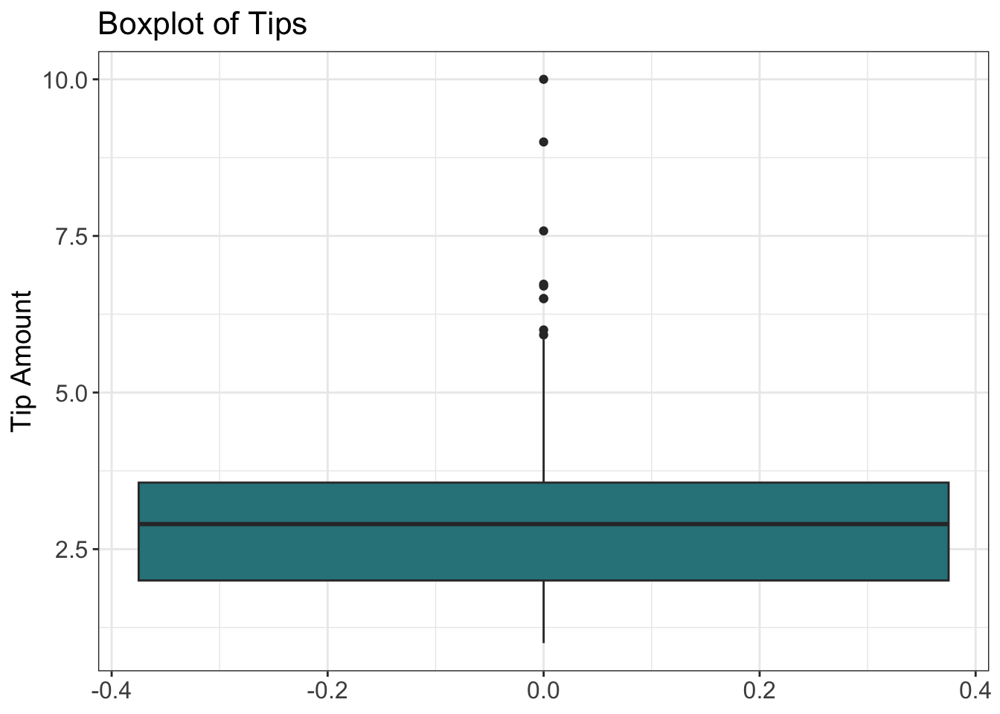
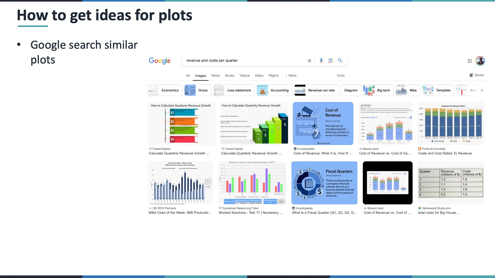
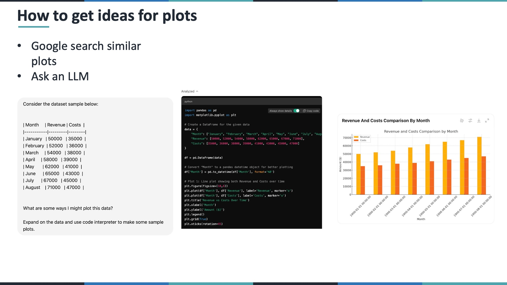
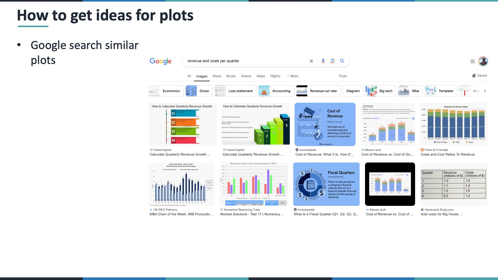
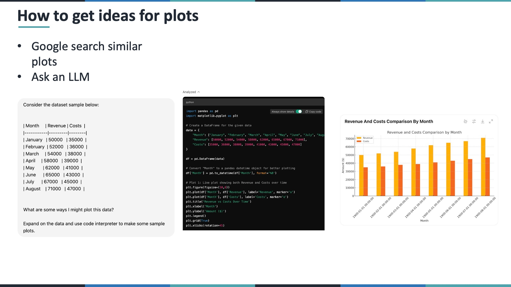

knitr::opts_chunk$set(echo = TRUE, warning = FALSE, message = FALSE)Data Visualization Types in R
This lesson covers a basic taxonomy of data visualization types and how to create them using ggplot2 in R.
First, we’ll show the different types of data visualization types. Then we’ll show how to create each type of visualization using ggplot2.
Libraries
library(ggplot2)
library(dplyr)
library(gapminder)Custom Theme
Create a custom theme to enhance the appearance of the plots.
custom_theme <- theme_bw() +
theme(
text = element_text(size = 14),
plot.title = element_text(size = 16),
axis.title = element_text(size = 14),
axis.text = element_text(size = 12)
)Data Preparation
Tips Dataset
Read in the tips dataset from the provided URL.
tips <- read.csv("https://raw.githubusercontent.com/the-graph-courses/data_on_display/master/data/tips.csv")Univariate Graphs
Numeric
Histogram
ggplot(tips, aes(x = tip)) +
geom_histogram(binwidth = 1, fill = "#2f828a", color = "black") +
custom_theme +
labs(title = "Histogram of Tips", x = "Tip Amount", y = "Frequency")Boxplot
ggplot(tips, aes(y = tip)) +
geom_boxplot(fill = "#2f828a") +
custom_theme +
labs(title = "Boxplot of Tips", y = "Tip Amount")
Violin Plot
ggplot(tips, aes(x = 0, y = tip)) +
geom_violin(fill = "#2f828a") +
geom_boxplot(width = 0.1) +
geom_jitter(aes(x = 0.5), position = position_jitter(width = 0.1), color = "#2f828a") +
custom_theme +
labs(title = "Violin Plot of Tips with Individual Points", y = "Tip Amount")Categorical
Bar Chart
ggplot(tips, aes(x = sex, fill = sex)) +
geom_bar() +
scale_fill_manual(values = c("#deb221", "#2f828a")) +
guides(fill = FALSE) +
custom_theme +
labs(title = "Count of Tips by Sex", x = "Sex", y = "Count")Pie Chart
tips_pie_data <- tips %>%
group_by(sex) %>%
summarise(total_tip = sum(tip))
ggplot(tips_pie_data, aes(x = "", y = total_tip, fill = sex)) +
geom_bar(stat = "identity", width = 1) +
coord_polar("y") +
scale_fill_manual(values = c("#deb221", "#2f828a")) +
guides(fill = FALSE) +
theme_void() +
labs(title = "Pie Chart of Total Tips by Sex")Bivariate Graphs
Numeric vs Numeric
Scatter Plot
ggplot(tips, aes(x = total_bill, y = tip)) +
geom_point(color = "#2f828a") +
custom_theme +
labs(title = "Tip vs Total Bill", x = "Total Bill", y = "Tip Amount")Numeric vs Categorical
Overlaid Histograms
ggplot(tips, aes(x = tip, fill = sex)) +
geom_histogram(alpha = 0.5, position = "identity", binwidth = 1) +
scale_fill_manual(values = c("#deb221", "#2f828a")) +
custom_theme +
labs(title = "Histogram of Tips by Sex", x = "Tip Amount", y = "Frequency")
Grouped Violin Plot
ggplot(tips, aes(x = sex, y = tip, fill = sex)) +
geom_violin() +
geom_boxplot(width = 0.1) +
scale_fill_manual(values = c("#deb221", "#2f828a")) +
guides(fill = FALSE) +
custom_theme +
labs(title = "Tip Amount by Sex", x = "Sex", y = "Tip Amount")Bar Plot with Error Bars
summary_df <- tips %>%
group_by(sex) %>%
summarise(
mean_tip = mean(tip),
sd_tip = sd(tip)
)
ggplot(summary_df, aes(x = sex, y = mean_tip, fill = sex)) +
geom_bar(stat = "identity") +
geom_errorbar(aes(ymin = mean_tip - sd_tip, ymax = mean_tip + sd_tip), width = 0.2) +
scale_fill_manual(values = c("#deb221", "#2f828a")) +
guides(fill = FALSE) +
custom_theme +
labs(title = "Mean Tip Amount by Sex with Standard Deviation", x = "Sex", y = "Mean Tip Amount")Categorical vs Categorical
Grouped Bar Plot
ggplot(tips, aes(x = day, fill = sex)) +
geom_bar(position = "dodge") +
scale_fill_manual(values = c("#deb221", "#2f828a")) +
custom_theme +
labs(title = "Count of Tips by Day and Sex", x = "Day", y = "Count")Stacked Bar Plot
ggplot(tips, aes(x = day, fill = sex)) +
geom_bar() +
scale_fill_manual(values = c("#deb221", "#2f828a")) +
custom_theme +
labs(title = "Stacked Bar Plot of Tips by Day and Sex", x = "Day", y = "Count")Percent Stacked Bar Plot
ggplot(tips, aes(x = day, fill = sex)) +
geom_bar(position = "fill") +
scale_y_continuous(labels = scales::percent) +
scale_fill_manual(values = c("#deb221", "#2f828a")) +
custom_theme +
labs(title = "Percentage of Tips by Day and Sex", x = "Day", y = "Percentage")Practice with Gapminder Data
Data Preparation
gap_2007 <- gapminder %>%
filter(year == 2007) %>%
mutate(
income_group = ifelse(gdpPercap > 15000, "High Income", "Low & Middle Income")
)- How does country GDP per capita vary across continents?
ggplot(gap_2007, aes(x = gdpPercap, y = continent, fill = continent)) +
geom_violin() +
geom_boxplot(width = 0.1) +
scale_fill_brewer(palette = "Set1") +
guides(fill = FALSE) +
custom_theme +
labs(title = "GDP per Capita by Continent in 2007", x = "GDP per Capita", y = "Continent")- Is there a relationship between GDP per capita & life expectancy?
ggplot(gap_2007, aes(x = gdpPercap, y = lifeExp)) +
geom_point(color = "#2f828a") +
custom_theme +
labs(title = "Life Expectancy vs GDP per Capita in 2007", x = "GDP per Capita", y = "Life Expectancy")- How does life expectancy vary between the income groups?
# Strip Chart
ggplot(gap_2007, aes(x = income_group, y = lifeExp)) +
geom_jitter(width = 0.2, color = "#2f828a") +
custom_theme +
labs(title = "Life Expectancy by Income Group in 2007", x = "Income Group", y = "Life Expectancy")# Violin Plot
ggplot(gap_2007, aes(x = income_group, y = lifeExp, fill = income_group)) +
geom_violin() +
geom_boxplot(width = 0.1) +
scale_fill_manual(values = c("High Income" = "#deb221", "Low & Middle Income" = "#2f828a")) +
guides(fill = FALSE) +
custom_theme +
labs(title = "Life Expectancy by Income Group in 2007", x = "Income Group", y = "Life Expectancy")- What is the relationship between continent & income group?
ggplot(gap_2007, aes(x = continent, fill = income_group)) +
geom_bar() +
scale_fill_manual(values = c("High Income" = "#deb221", "Low & Middle Income" = "#2f828a")) +
guides(fill = FALSE) +
custom_theme +
labs(title = "Income Group Distribution by Continent in 2007", x = "Continent", y = "Count")Time Series
Nigeria population over time
Data Preparation
nigeria_pop <- gapminder %>%
filter(country == "Nigeria")Bar Chart
ggplot(nigeria_pop, aes(x = factor(year), y = pop)) +
geom_bar(stat = "identity", fill = "#2f828a") +
custom_theme +
labs(title = "Nigeria Population Over Time", x = "Year", y = "Population")Line Chart
ggplot(nigeria_pop, aes(x = year, y = pop)) +
geom_line(color = "#2f828a") +
custom_theme +
labs(title = "Nigeria Population Over Time", x = "Year", y = "Population")Line Chart with Points
ggplot(nigeria_pop, aes(x = year, y = pop)) +
geom_line(color = "#2f828a") +
geom_point(color = "#deb221") +
custom_theme +
labs(title = "Nigeria Population Over Time", x = "Year", y = "Population")Conclusion
This tutorial demonstrates how to create various types of data visualizations using ggplot2 in R. By understanding these basic plots, you can explore and present data effectively.
Slides
  
 